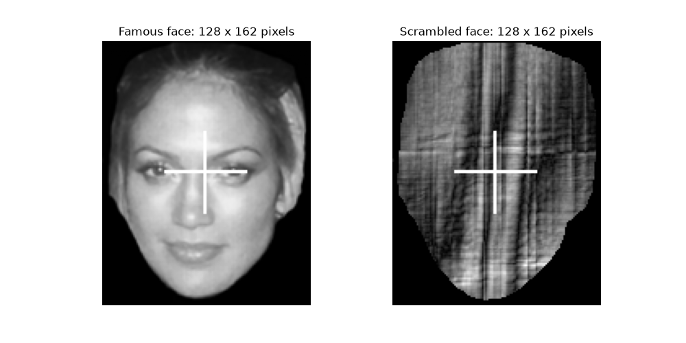
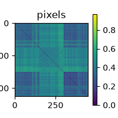
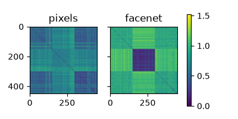
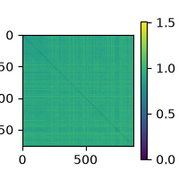
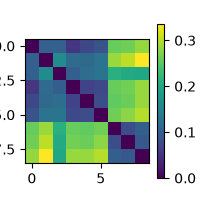
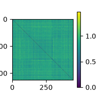
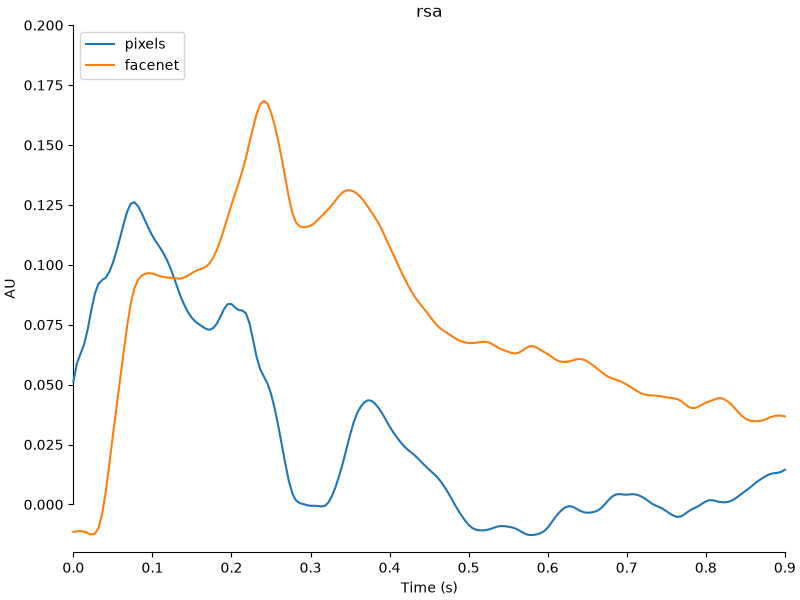

Note
Go to the end to download the full example code.
Tutorial part 1: RSA on sensor-level MEG data#
In this tutorial, we will perform sensor-level RSA analysis on MEG data.
We will explore how representational similarity analysis (RSA) can be used to study the neural representational code within visual cortex. We will start with performing RSA on the sensor level data, followed by source level and finally we will perform group level statistical analysis. Along the way, we will encounter many of the functions and classes offered by MNE-RSA, which will always be presented in the form of links to the API Documentation which you are encouraged to explore.
The dataset we will be working with today is the Wakeman & Nelson (2015) “faces” dataset. During this experiment, participants were presented with a series of images, containing:
Faces of famous people that the participants likely knew
Faces of people that the participants likely did not know
Scrambled faces: the images were cut-up and randomly put together again
As a first step, you need to download and extract the dataset: rsa-data.zip.
You can either do this by executing the cell below, or you can do so manually. In any
case, make sure that the data_path variable points to where you have extracted the
rsa-data.zip
file to.
# ruff: noqa: E402
# sphinx_gallery_thumbnail_number=8
import os
import pooch
# Download and unzip the data
pooch.retrieve(
url="https://github.com/wmvanvliet/neuroscience_tutorials/releases/download/2/rsa-data.zip",
known_hash="md5:859c0684dd25f8b82d011840725cbef6",
progressbar=True,
processor=pooch.Unzip(members=["data"], extract_dir=os.getcwd()),
)
# Set this to where you've extracted `rsa-data.zip` to
data_path = "data"
0%| | 0.00/1.41G [00:00<?, ?B/s]
0%|▏ | 5.36M/1.41G [00:00<00:26, 53.6MB/s]
1%|▎ | 10.7M/1.41G [00:00<00:28, 49.6MB/s]
1%|▌ | 21.0M/1.41G [00:00<00:19, 69.2MB/s]
2%|▊ | 29.4M/1.41G [00:00<00:18, 74.5MB/s]
3%|▉ | 36.8M/1.41G [00:00<00:24, 56.1MB/s]
3%|█▏ | 46.9M/1.41G [00:00<00:19, 68.2MB/s]
4%|█▍ | 54.4M/1.41G [00:00<00:22, 60.8MB/s]
4%|█▌ | 61.6M/1.41G [00:00<00:21, 63.7MB/s]
5%|█▊ | 68.4M/1.41G [00:01<00:22, 59.6MB/s]
5%|█▉ | 74.7M/1.41G [00:01<00:38, 34.7MB/s]
6%|██ | 79.5M/1.41G [00:01<00:36, 36.2MB/s]
6%|██▏ | 84.2M/1.41G [00:01<00:35, 36.8MB/s]
6%|██▎ | 88.6M/1.41G [00:01<00:34, 37.7MB/s]
7%|██▍ | 92.9M/1.41G [00:01<00:34, 38.4MB/s]
7%|██▌ | 97.2M/1.41G [00:02<00:33, 39.1MB/s]
7%|██▋ | 101M/1.41G [00:02<00:32, 39.6MB/s]
8%|██▊ | 106M/1.41G [00:02<00:33, 39.1MB/s]
8%|██▉ | 110M/1.41G [00:02<00:34, 37.4MB/s]
8%|███ | 113M/1.41G [00:02<00:36, 35.1MB/s]
8%|███▏ | 117M/1.41G [00:02<00:38, 33.8MB/s]
9%|███▎ | 121M/1.41G [00:02<00:38, 33.0MB/s]
9%|███▎ | 124M/1.41G [00:02<00:39, 32.5MB/s]
9%|███▍ | 127M/1.41G [00:02<00:39, 32.4MB/s]
9%|███▌ | 130M/1.41G [00:03<00:39, 32.3MB/s]
10%|███▌ | 134M/1.41G [00:03<00:39, 32.5MB/s]
10%|███▋ | 137M/1.41G [00:03<00:38, 32.8MB/s]
10%|███▊ | 140M/1.41G [00:03<00:38, 33.1MB/s]
10%|███▉ | 144M/1.41G [00:03<00:38, 33.2MB/s]
10%|███▉ | 147M/1.41G [00:03<00:37, 33.5MB/s]
11%|████ | 151M/1.41G [00:03<00:37, 33.8MB/s]
11%|████▏ | 154M/1.41G [00:03<00:36, 34.3MB/s]
11%|████▎ | 158M/1.41G [00:03<00:35, 34.7MB/s]
11%|████▎ | 161M/1.41G [00:03<00:35, 35.1MB/s]
12%|████▍ | 165M/1.41G [00:04<00:34, 35.5MB/s]
12%|████▌ | 169M/1.41G [00:04<00:34, 35.8MB/s]
12%|████▋ | 172M/1.41G [00:04<00:34, 36.1MB/s]
13%|████▊ | 176M/1.41G [00:04<00:33, 36.5MB/s]
13%|████▊ | 180M/1.41G [00:04<00:33, 37.1MB/s]
13%|████▉ | 184M/1.41G [00:04<00:32, 37.6MB/s]
13%|█████ | 188M/1.41G [00:04<00:32, 37.9MB/s]
14%|█████▏ | 192M/1.41G [00:04<00:31, 38.4MB/s]
14%|█████▎ | 196M/1.41G [00:04<00:31, 38.7MB/s]
14%|█████▍ | 200M/1.41G [00:04<00:30, 39.1MB/s]
14%|█████▌ | 204M/1.41G [00:05<00:30, 39.4MB/s]
15%|█████▌ | 208M/1.41G [00:05<00:30, 39.8MB/s]
15%|█████▋ | 212M/1.41G [00:05<00:29, 40.3MB/s]
15%|█████▊ | 216M/1.41G [00:05<00:29, 40.7MB/s]
16%|█████▉ | 220M/1.41G [00:05<00:28, 41.1MB/s]
16%|██████ | 225M/1.41G [00:05<00:28, 41.8MB/s]
16%|██████▏ | 229M/1.41G [00:05<00:27, 42.1MB/s]
17%|██████▎ | 233M/1.41G [00:05<00:28, 41.8MB/s]
17%|██████▍ | 238M/1.41G [00:05<00:28, 41.6MB/s]
17%|██████▌ | 242M/1.41G [00:05<00:30, 37.8MB/s]
17%|██████▋ | 246M/1.41G [00:06<00:32, 35.8MB/s]
18%|██████▋ | 249M/1.41G [00:06<00:33, 34.9MB/s]
18%|██████▊ | 253M/1.41G [00:06<00:33, 34.4MB/s]
18%|██████▉ | 256M/1.41G [00:06<00:33, 34.3MB/s]
18%|███████ | 260M/1.41G [00:06<00:33, 34.1MB/s]
19%|███████ | 263M/1.41G [00:06<00:33, 34.2MB/s]
19%|███████▏ | 267M/1.41G [00:06<00:33, 34.5MB/s]
19%|███████▎ | 270M/1.41G [00:06<00:35, 32.2MB/s]
19%|███████▍ | 273M/1.41G [00:06<00:37, 29.8MB/s]
20%|███████▍ | 276M/1.41G [00:07<00:39, 28.6MB/s]
20%|███████▌ | 279M/1.41G [00:07<00:40, 27.9MB/s]
20%|███████▌ | 282M/1.41G [00:07<00:40, 27.5MB/s]
20%|███████▋ | 285M/1.41G [00:07<00:40, 27.4MB/s]
20%|███████▊ | 288M/1.41G [00:07<00:40, 27.4MB/s]
21%|███████▊ | 290M/1.41G [00:07<00:40, 27.5MB/s]
21%|███████▉ | 293M/1.41G [00:07<00:40, 27.7MB/s]
21%|████████ | 296M/1.41G [00:07<00:39, 28.2MB/s]
21%|████████ | 299M/1.41G [00:07<00:38, 28.5MB/s]
21%|████████▏ | 302M/1.41G [00:08<00:38, 28.7MB/s]
22%|████████▏ | 305M/1.41G [00:08<00:38, 28.9MB/s]
22%|████████▎ | 308M/1.41G [00:08<00:39, 28.0MB/s]
22%|████████▍ | 311M/1.41G [00:08<00:42, 25.8MB/s]
22%|████████▍ | 313M/1.41G [00:08<00:44, 24.6MB/s]
22%|████████▌ | 316M/1.41G [00:08<00:45, 24.1MB/s]
23%|████████▌ | 318M/1.41G [00:08<00:50, 21.4MB/s]
23%|████████▋ | 320M/1.41G [00:08<00:54, 19.9MB/s]
23%|████████▋ | 322M/1.41G [00:08<00:56, 19.2MB/s]
23%|████████▊ | 324M/1.41G [00:09<00:57, 18.7MB/s]
23%|████████▊ | 326M/1.41G [00:09<00:58, 18.6MB/s]
23%|████████▊ | 328M/1.41G [00:09<00:58, 18.3MB/s]
23%|████████▉ | 330M/1.41G [00:09<00:57, 18.6MB/s]
24%|████████▉ | 332M/1.41G [00:09<00:57, 18.8MB/s]
24%|█████████ | 334M/1.41G [00:09<00:56, 18.9MB/s]
24%|█████████ | 336M/1.41G [00:09<00:55, 19.2MB/s]
24%|█████████▏ | 338M/1.41G [00:09<00:54, 19.6MB/s]
24%|█████████▏ | 340M/1.41G [00:09<00:53, 20.1MB/s]
24%|█████████▎ | 342M/1.41G [00:10<00:52, 20.4MB/s]
25%|█████████▎ | 344M/1.41G [00:10<00:50, 20.9MB/s]
25%|█████████▎ | 347M/1.41G [00:10<00:49, 21.3MB/s]
25%|█████████▍ | 349M/1.41G [00:10<00:48, 21.7MB/s]
25%|█████████▍ | 351M/1.41G [00:10<00:47, 22.0MB/s]
25%|█████████▌ | 354M/1.41G [00:10<00:46, 22.4MB/s]
25%|█████████▌ | 356M/1.41G [00:10<00:46, 22.5MB/s]
25%|█████████▋ | 358M/1.41G [00:10<00:46, 22.6MB/s]
26%|█████████▋ | 361M/1.41G [00:10<00:45, 23.1MB/s]
26%|█████████▊ | 363M/1.41G [00:10<00:47, 22.0MB/s]
26%|█████████▊ | 365M/1.41G [00:11<00:51, 20.3MB/s]
26%|█████████▉ | 367M/1.41G [00:11<00:52, 19.7MB/s]
26%|█████████▉ | 369M/1.41G [00:11<00:53, 19.5MB/s]
26%|██████████ | 371M/1.41G [00:11<00:53, 19.4MB/s]
27%|██████████ | 373M/1.41G [00:11<00:52, 19.5MB/s]
27%|██████████▏ | 375M/1.41G [00:11<00:52, 19.4MB/s]
27%|██████████▏ | 377M/1.41G [00:11<00:51, 19.8MB/s]
27%|██████████▏ | 379M/1.41G [00:11<00:51, 19.9MB/s]
27%|██████████▎ | 381M/1.41G [00:11<00:50, 20.4MB/s]
27%|██████████▎ | 383M/1.41G [00:11<00:49, 20.8MB/s]
27%|██████████▍ | 386M/1.41G [00:12<00:48, 20.9MB/s]
28%|██████████▍ | 388M/1.41G [00:12<00:49, 20.7MB/s]
28%|██████████▌ | 390M/1.41G [00:12<00:53, 19.1MB/s]
28%|██████████▌ | 392M/1.41G [00:12<00:55, 18.3MB/s]
28%|██████████▋ | 394M/1.41G [00:12<00:57, 17.7MB/s]
28%|██████████▋ | 395M/1.41G [00:12<00:57, 17.6MB/s]
28%|██████████▋ | 397M/1.41G [00:12<00:57, 17.6MB/s]
28%|██████████▊ | 399M/1.41G [00:12<00:56, 17.7MB/s]
29%|██████████▊ | 401M/1.41G [00:12<00:56, 17.9MB/s]
29%|██████████▉ | 403M/1.41G [00:13<00:55, 18.2MB/s]
29%|██████████▉ | 405M/1.41G [00:13<00:54, 18.5MB/s]
29%|██████████▉ | 407M/1.41G [00:13<00:52, 18.9MB/s]
29%|███████████ | 409M/1.41G [00:13<00:51, 19.3MB/s]
29%|███████████ | 411M/1.41G [00:13<00:50, 19.5MB/s]
29%|███████████▏ | 413M/1.41G [00:13<00:49, 20.0MB/s]
30%|███████████▏ | 415M/1.41G [00:13<00:48, 20.4MB/s]
30%|███████████▎ | 417M/1.41G [00:13<00:47, 20.9MB/s]
30%|███████████▎ | 419M/1.41G [00:13<00:46, 21.3MB/s]
30%|███████████▍ | 422M/1.41G [00:13<00:45, 21.7MB/s]
30%|███████████▍ | 424M/1.41G [00:14<00:44, 22.0MB/s]
30%|███████████▌ | 426M/1.41G [00:14<00:43, 22.5MB/s]
31%|███████████▌ | 429M/1.41G [00:14<00:42, 22.9MB/s]
31%|███████████▋ | 431M/1.41G [00:14<00:41, 23.3MB/s]
31%|███████████▋ | 434M/1.41G [00:14<00:41, 23.6MB/s]
31%|███████████▊ | 436M/1.41G [00:14<00:40, 23.9MB/s]
31%|███████████▊ | 439M/1.41G [00:14<00:43, 22.1MB/s]
31%|███████████▉ | 441M/1.41G [00:14<00:49, 19.6MB/s]
32%|███████████▉ | 443M/1.41G [00:15<00:55, 17.2MB/s]
32%|████████████ | 445M/1.41G [00:15<01:00, 16.0MB/s]
32%|████████████ | 446M/1.41G [00:15<01:02, 15.4MB/s]
32%|████████████ | 448M/1.41G [00:15<01:03, 15.1MB/s]
32%|████████████▏ | 449M/1.41G [00:15<01:03, 15.1MB/s]
32%|████████████▏ | 451M/1.41G [00:15<01:03, 15.1MB/s]
32%|████████████▏ | 453M/1.41G [00:15<01:01, 15.5MB/s]
32%|████████████▎ | 454M/1.41G [00:15<01:00, 15.6MB/s]
32%|████████████▎ | 456M/1.41G [00:15<00:59, 16.0MB/s]
33%|████████████▎ | 458M/1.41G [00:15<00:57, 16.4MB/s]
33%|████████████▍ | 459M/1.41G [00:16<00:56, 16.7MB/s]
33%|████████████▍ | 461M/1.41G [00:16<00:55, 17.0MB/s]
33%|████████████▌ | 463M/1.41G [00:16<00:53, 17.5MB/s]
33%|████████████▌ | 465M/1.41G [00:16<00:52, 18.0MB/s]
33%|████████████▌ | 467M/1.41G [00:16<00:51, 18.4MB/s]
33%|████████████▋ | 469M/1.41G [00:16<00:49, 18.8MB/s]
34%|████████████▋ | 471M/1.41G [00:16<00:48, 19.2MB/s]
34%|████████████▊ | 473M/1.41G [00:16<00:47, 19.6MB/s]
34%|████████████▊ | 475M/1.41G [00:16<00:46, 19.9MB/s]
34%|████████████▉ | 477M/1.41G [00:16<00:45, 20.4MB/s]
34%|████████████▉ | 479M/1.41G [00:17<00:44, 20.8MB/s]
34%|█████████████ | 482M/1.41G [00:17<00:43, 21.1MB/s]
34%|█████████████ | 484M/1.41G [00:17<00:42, 21.6MB/s]
35%|█████████████▏ | 486M/1.41G [00:17<00:42, 21.9MB/s]
35%|█████████████▏ | 489M/1.41G [00:17<00:41, 22.3MB/s]
35%|█████████████▎ | 491M/1.41G [00:17<00:39, 22.9MB/s]
35%|█████████████▎ | 493M/1.41G [00:17<00:39, 23.3MB/s]
35%|█████████████▍ | 496M/1.41G [00:17<00:38, 23.7MB/s]
35%|█████████████▍ | 498M/1.41G [00:17<00:37, 24.0MB/s]
36%|█████████████▌ | 501M/1.41G [00:17<00:36, 24.5MB/s]
36%|█████████████▌ | 504M/1.41G [00:18<00:36, 24.9MB/s]
36%|█████████████▋ | 506M/1.41G [00:18<00:35, 25.3MB/s]
36%|█████████████▊ | 509M/1.41G [00:18<00:36, 24.4MB/s]
36%|█████████████▊ | 511M/1.41G [00:18<00:45, 19.7MB/s]
37%|█████████████▉ | 513M/1.41G [00:18<00:51, 17.4MB/s]
37%|█████████████▉ | 515M/1.41G [00:18<01:00, 14.8MB/s]
37%|█████████████▉ | 517M/1.41G [00:18<01:05, 13.7MB/s]
37%|██████████████ | 518M/1.41G [00:19<01:07, 13.1MB/s]
37%|██████████████ | 520M/1.41G [00:19<01:09, 12.8MB/s]
37%|██████████████ | 521M/1.41G [00:19<01:11, 12.4MB/s]
37%|██████████████ | 522M/1.41G [00:19<01:17, 11.4MB/s]
37%|██████████████▏ | 523M/1.41G [00:19<01:21, 10.8MB/s]
37%|██████████████▏ | 524M/1.41G [00:19<01:22, 10.7MB/s]
37%|██████████████▏ | 526M/1.41G [00:19<01:23, 10.6MB/s]
37%|██████████████▏ | 527M/1.41G [00:19<01:22, 10.6MB/s]
38%|██████████████▎ | 528M/1.41G [00:20<01:21, 10.8MB/s]
38%|██████████████▎ | 529M/1.41G [00:20<01:19, 11.0MB/s]
38%|██████████████▎ | 530M/1.41G [00:20<01:17, 11.3MB/s]
38%|██████████████▎ | 531M/1.41G [00:20<01:15, 11.6MB/s]
38%|██████████████▍ | 533M/1.41G [00:20<01:12, 12.0MB/s]
38%|██████████████▍ | 534M/1.41G [00:20<01:09, 12.5MB/s]
38%|██████████████▍ | 535M/1.41G [00:20<01:07, 12.8MB/s]
38%|██████████████▌ | 537M/1.41G [00:20<01:05, 13.2MB/s]
38%|██████████████▌ | 538M/1.41G [00:20<01:03, 13.7MB/s]
38%|██████████████▌ | 540M/1.41G [00:20<01:02, 13.9MB/s]
39%|██████████████▋ | 541M/1.41G [00:21<01:02, 13.9MB/s]
39%|██████████████▋ | 543M/1.41G [00:21<00:59, 14.5MB/s]
39%|██████████████▋ | 544M/1.41G [00:21<00:57, 15.1MB/s]
39%|██████████████▊ | 546M/1.41G [00:21<00:55, 15.4MB/s]
39%|██████████████▊ | 548M/1.41G [00:21<00:54, 15.8MB/s]
39%|██████████████▊ | 549M/1.41G [00:21<00:52, 16.2MB/s]
39%|██████████████▉ | 551M/1.41G [00:21<00:51, 16.7MB/s]
39%|██████████████▉ | 553M/1.41G [00:21<00:49, 17.2MB/s]
39%|███████████████ | 555M/1.41G [00:21<00:48, 17.6MB/s]
40%|███████████████ | 557M/1.41G [00:21<00:47, 18.0MB/s]
40%|███████████████ | 559M/1.41G [00:22<00:45, 18.5MB/s]
40%|███████████████▏ | 561M/1.41G [00:22<00:44, 18.9MB/s]
40%|███████████████▏ | 563M/1.41G [00:22<00:43, 19.3MB/s]
40%|███████████████▎ | 565M/1.41G [00:22<00:42, 19.8MB/s]
40%|███████████████▎ | 567M/1.41G [00:22<00:41, 20.1MB/s]
40%|███████████████▍ | 569M/1.41G [00:22<00:40, 20.5MB/s]
41%|███████████████▍ | 571M/1.41G [00:22<00:39, 20.9MB/s]
41%|███████████████▌ | 574M/1.41G [00:22<00:38, 21.4MB/s]
41%|███████████████▌ | 576M/1.41G [00:22<00:38, 21.8MB/s]
41%|███████████████▋ | 578M/1.41G [00:22<00:37, 22.1MB/s]
41%|███████████████▋ | 581M/1.41G [00:23<00:36, 22.4MB/s]
41%|███████████████▊ | 583M/1.41G [00:23<00:36, 22.8MB/s]
42%|███████████████▊ | 585M/1.41G [00:23<00:35, 23.3MB/s]
42%|███████████████▉ | 588M/1.41G [00:23<00:34, 23.7MB/s]
42%|███████████████▉ | 590M/1.41G [00:23<00:34, 23.9MB/s]
42%|████████████████ | 593M/1.41G [00:23<00:33, 24.3MB/s]
42%|████████████████ | 595M/1.41G [00:23<00:32, 24.8MB/s]
43%|████████████████▏ | 598M/1.41G [00:23<00:32, 25.1MB/s]
43%|████████████████▏ | 601M/1.41G [00:23<00:31, 25.5MB/s]
43%|████████████████▎ | 603M/1.41G [00:23<00:30, 26.1MB/s]
43%|████████████████▍ | 606M/1.41G [00:24<00:30, 26.3MB/s]
43%|████████████████▍ | 609M/1.41G [00:24<00:29, 26.7MB/s]
44%|████████████████▌ | 612M/1.41G [00:24<00:29, 27.2MB/s]
44%|████████████████▌ | 615M/1.41G [00:24<00:28, 27.5MB/s]
44%|████████████████▋ | 618M/1.41G [00:24<00:27, 28.1MB/s]
44%|████████████████▊ | 621M/1.41G [00:24<00:27, 28.5MB/s]
44%|████████████████▊ | 624M/1.41G [00:24<00:27, 28.9MB/s]
45%|████████████████▉ | 627M/1.41G [00:24<00:26, 29.4MB/s]
45%|█████████████████ | 630M/1.41G [00:24<00:26, 29.8MB/s]
45%|█████████████████ | 633M/1.41G [00:24<00:25, 30.1MB/s]
45%|█████████████████▏ | 636M/1.41G [00:25<00:25, 30.6MB/s]
45%|█████████████████▎ | 639M/1.41G [00:25<00:24, 31.0MB/s]
46%|█████████████████▎ | 642M/1.41G [00:25<00:24, 31.4MB/s]
46%|█████████████████▍ | 646M/1.41G [00:25<00:23, 32.0MB/s]
46%|█████████████████▌ | 649M/1.41G [00:25<00:23, 32.3MB/s]
46%|█████████████████▋ | 652M/1.41G [00:25<00:23, 32.7MB/s]
47%|█████████████████▋ | 656M/1.41G [00:25<00:22, 33.1MB/s]
47%|█████████████████▊ | 659M/1.41G [00:25<00:22, 33.3MB/s]
47%|█████████████████▉ | 663M/1.41G [00:25<00:22, 33.5MB/s]
47%|██████████████████ | 666M/1.41G [00:25<00:21, 33.7MB/s]
48%|██████████████████ | 670M/1.41G [00:26<00:21, 34.2MB/s]
48%|██████████████████▏ | 673M/1.41G [00:26<00:21, 34.6MB/s]
48%|██████████████████▎ | 677M/1.41G [00:26<00:20, 35.1MB/s]
48%|██████████████████▍ | 680M/1.41G [00:26<00:20, 35.2MB/s]
49%|██████████████████▍ | 684M/1.41G [00:26<00:20, 35.4MB/s]
49%|██████████████████▌ | 688M/1.41G [00:26<00:20, 35.6MB/s]
49%|██████████████████▋ | 691M/1.41G [00:26<00:19, 36.3MB/s]
49%|██████████████████▊ | 695M/1.41G [00:26<00:19, 36.7MB/s]
50%|██████████████████▉ | 699M/1.41G [00:26<00:18, 37.5MB/s]
50%|███████████████████ | 703M/1.41G [00:26<00:20, 34.1MB/s]
50%|███████████████████ | 706M/1.41G [00:27<00:21, 32.0MB/s]
50%|███████████████████▏ | 710M/1.41G [00:27<00:22, 30.7MB/s]
51%|███████████████████▎ | 713M/1.41G [00:27<00:23, 29.3MB/s]
51%|███████████████████▎ | 716M/1.41G [00:27<00:26, 26.2MB/s]
51%|███████████████████▍ | 718M/1.41G [00:27<00:28, 23.7MB/s]
51%|███████████████████▍ | 721M/1.41G [00:27<00:32, 20.8MB/s]
51%|███████████████████▌ | 723M/1.41G [00:27<00:35, 19.5MB/s]
52%|███████████████████▌ | 725M/1.41G [00:28<00:36, 18.7MB/s]
52%|███████████████████▋ | 727M/1.41G [00:28<00:37, 18.2MB/s]
52%|███████████████████▋ | 729M/1.41G [00:28<00:37, 18.0MB/s]
52%|███████████████████▊ | 731M/1.41G [00:28<00:37, 17.9MB/s]
52%|███████████████████▊ | 732M/1.41G [00:28<00:37, 18.1MB/s]
52%|███████████████████▊ | 734M/1.41G [00:28<00:36, 18.2MB/s]
52%|███████████████████▉ | 736M/1.41G [00:28<00:36, 18.4MB/s]
53%|███████████████████▉ | 738M/1.41G [00:28<00:36, 18.4MB/s]
53%|████████████████████ | 740M/1.41G [00:28<00:36, 18.5MB/s]
53%|████████████████████ | 742M/1.41G [00:28<00:38, 17.3MB/s]
53%|████████████████████ | 744M/1.41G [00:29<00:41, 16.1MB/s]
53%|████████████████████▏ | 745M/1.41G [00:29<00:41, 15.8MB/s]
53%|████████████████████▏ | 747M/1.41G [00:29<00:42, 15.6MB/s]
53%|████████████████████▏ | 748M/1.41G [00:29<00:41, 15.7MB/s]
53%|████████████████████▎ | 750M/1.41G [00:29<00:41, 15.8MB/s]
53%|████████████████████▎ | 752M/1.41G [00:29<00:40, 16.1MB/s]
54%|████████████████████▎ | 753M/1.41G [00:29<00:40, 16.3MB/s]
54%|████████████████████▍ | 755M/1.41G [00:29<00:39, 16.6MB/s]
54%|████████████████████▍ | 757M/1.41G [00:29<00:38, 17.0MB/s]
54%|████████████████████▌ | 759M/1.41G [00:30<00:37, 17.4MB/s]
54%|████████████████████▌ | 761M/1.41G [00:30<00:36, 17.8MB/s]
54%|████████████████████▌ | 763M/1.41G [00:30<00:35, 18.2MB/s]
54%|████████████████████▋ | 765M/1.41G [00:30<00:35, 17.8MB/s]
55%|████████████████████▋ | 766M/1.41G [00:30<00:36, 17.4MB/s]
55%|████████████████████▊ | 768M/1.41G [00:30<00:38, 16.4MB/s]
55%|████████████████████▊ | 770M/1.41G [00:30<00:39, 16.0MB/s]
55%|████████████████████▊ | 771M/1.41G [00:30<00:40, 15.8MB/s]
55%|████████████████████▉ | 773M/1.41G [00:30<00:40, 15.7MB/s]
55%|████████████████████▉ | 775M/1.41G [00:30<00:39, 15.9MB/s]
55%|████████████████████▉ | 776M/1.41G [00:31<00:39, 16.1MB/s]
55%|█████████████████████ | 778M/1.41G [00:31<00:38, 16.4MB/s]
55%|█████████████████████ | 780M/1.41G [00:31<00:37, 16.7MB/s]
56%|█████████████████████▏ | 782M/1.41G [00:31<00:36, 17.0MB/s]
56%|█████████████████████▏ | 783M/1.41G [00:31<00:35, 17.4MB/s]
56%|█████████████████████▏ | 785M/1.41G [00:31<00:35, 17.7MB/s]
56%|█████████████████████▎ | 787M/1.41G [00:31<00:34, 18.1MB/s]
56%|█████████████████████▎ | 789M/1.41G [00:31<00:33, 18.3MB/s]
56%|█████████████████████▍ | 791M/1.41G [00:31<00:33, 18.3MB/s]
56%|█████████████████████▍ | 793M/1.41G [00:32<00:36, 16.8MB/s]
57%|█████████████████████▍ | 794M/1.41G [00:32<00:37, 16.2MB/s]
57%|█████████████████████▌ | 796M/1.41G [00:32<00:38, 15.8MB/s]
57%|█████████████████████▌ | 798M/1.41G [00:32<00:38, 15.7MB/s]
57%|█████████████████████▌ | 799M/1.41G [00:32<00:38, 15.8MB/s]
57%|█████████████████████▋ | 801M/1.41G [00:32<00:37, 16.0MB/s]
57%|█████████████████████▋ | 803M/1.41G [00:32<00:37, 16.1MB/s]
57%|█████████████████████▋ | 804M/1.41G [00:32<00:39, 15.2MB/s]
57%|█████████████████████▊ | 806M/1.41G [00:32<00:42, 14.3MB/s]
57%|█████████████████████▊ | 807M/1.41G [00:33<00:44, 13.4MB/s]
58%|█████████████████████▊ | 808M/1.41G [00:33<00:49, 12.0MB/s]
58%|█████████████████████▉ | 810M/1.41G [00:33<00:52, 11.4MB/s]
58%|█████████████████████▉ | 811M/1.41G [00:33<00:53, 11.2MB/s]
58%|█████████████████████▉ | 812M/1.41G [00:33<00:53, 11.1MB/s]
58%|█████████████████████▉ | 813M/1.41G [00:33<00:53, 11.1MB/s]
58%|██████████████████████ | 814M/1.41G [00:33<00:53, 11.1MB/s]
58%|██████████████████████ | 815M/1.41G [00:33<00:51, 11.5MB/s]
58%|██████████████████████ | 817M/1.41G [00:33<00:50, 11.7MB/s]
58%|██████████████████████ | 818M/1.41G [00:34<00:48, 12.1MB/s]
58%|██████████████████████▏ | 819M/1.41G [00:34<00:47, 12.4MB/s]
58%|██████████████████████▏ | 821M/1.41G [00:34<00:45, 12.8MB/s]
58%|██████████████████████▏ | 822M/1.41G [00:34<00:43, 13.3MB/s]
59%|██████████████████████▎ | 824M/1.41G [00:34<00:42, 13.7MB/s]
59%|██████████████████████▎ | 825M/1.41G [00:34<00:41, 14.0MB/s]
59%|██████████████████████▎ | 827M/1.41G [00:34<00:40, 14.4MB/s]
59%|██████████████████████▍ | 828M/1.41G [00:34<00:39, 14.5MB/s]
59%|██████████████████████▍ | 830M/1.41G [00:34<00:38, 15.1MB/s]
59%|██████████████████████▍ | 831M/1.41G [00:34<00:37, 15.5MB/s]
59%|██████████████████████▌ | 833M/1.41G [00:35<00:36, 15.8MB/s]
59%|██████████████████████▌ | 835M/1.41G [00:35<00:35, 16.2MB/s]
60%|██████████████████████▌ | 837M/1.41G [00:35<00:34, 16.5MB/s]
60%|██████████████████████▋ | 838M/1.41G [00:35<00:33, 16.8MB/s]
60%|██████████████████████▋ | 840M/1.41G [00:35<00:32, 17.3MB/s]
60%|██████████████████████▊ | 842M/1.41G [00:35<00:31, 17.9MB/s]
60%|██████████████████████▊ | 844M/1.41G [00:35<00:30, 18.4MB/s]
60%|██████████████████████▊ | 846M/1.41G [00:35<00:29, 18.8MB/s]
60%|██████████████████████▉ | 848M/1.41G [00:35<00:29, 19.2MB/s]
60%|██████████████████████▉ | 850M/1.41G [00:35<00:29, 18.9MB/s]
61%|███████████████████████ | 852M/1.41G [00:36<00:30, 18.4MB/s]
61%|███████████████████████ | 854M/1.41G [00:36<00:31, 17.3MB/s]
61%|███████████████████████▏ | 855M/1.41G [00:36<00:33, 16.6MB/s]
61%|███████████████████████▏ | 857M/1.41G [00:36<00:33, 16.5MB/s]
61%|███████████████████████▏ | 859M/1.41G [00:36<00:33, 16.5MB/s]
61%|███████████████████████▎ | 860M/1.41G [00:36<00:33, 16.5MB/s]
61%|███████████████████████▎ | 862M/1.41G [00:36<00:32, 16.7MB/s]
61%|███████████████████████▎ | 864M/1.41G [00:36<00:32, 16.9MB/s]
62%|███████████████████████▍ | 866M/1.41G [00:36<00:31, 17.2MB/s]
62%|███████████████████████▍ | 868M/1.41G [00:36<00:30, 17.4MB/s]
62%|███████████████████████▌ | 869M/1.41G [00:37<00:30, 17.8MB/s]
62%|███████████████████████▌ | 871M/1.41G [00:37<00:29, 18.2MB/s]
62%|███████████████████████▌ | 873M/1.41G [00:37<00:28, 18.8MB/s]
62%|███████████████████████▋ | 875M/1.41G [00:37<00:27, 19.1MB/s]
62%|███████████████████████▋ | 877M/1.41G [00:37<00:27, 19.4MB/s]
63%|███████████████████████▊ | 880M/1.41G [00:37<00:26, 19.9MB/s]
63%|███████████████████████▊ | 882M/1.41G [00:37<00:25, 20.3MB/s]
63%|███████████████████████▉ | 884M/1.41G [00:37<00:25, 20.7MB/s]
63%|███████████████████████▉ | 886M/1.41G [00:37<00:24, 21.2MB/s]
63%|████████████████████████ | 888M/1.41G [00:37<00:24, 21.5MB/s]
63%|████████████████████████ | 891M/1.41G [00:38<00:23, 21.9MB/s]
64%|████████████████████████▏ | 893M/1.41G [00:38<00:22, 22.4MB/s]
64%|████████████████████████▏ | 895M/1.41G [00:38<00:22, 22.9MB/s]
64%|████████████████████████▎ | 898M/1.41G [00:38<00:22, 22.5MB/s]
64%|████████████████████████▎ | 900M/1.41G [00:38<00:24, 20.6MB/s]
64%|████████████████████████▍ | 902M/1.41G [00:38<00:25, 19.7MB/s]
64%|████████████████████████▍ | 904M/1.41G [00:38<00:26, 19.1MB/s]
64%|████████████████████████▍ | 906M/1.41G [00:38<00:26, 18.8MB/s]
65%|████████████████████████▌ | 908M/1.41G [00:38<00:28, 17.4MB/s]
65%|████████████████████████▌ | 910M/1.41G [00:39<00:30, 16.2MB/s]
65%|████████████████████████▋ | 911M/1.41G [00:39<00:31, 15.6MB/s]
65%|████████████████████████▋ | 913M/1.41G [00:39<00:32, 15.4MB/s]
65%|████████████████████████▋ | 914M/1.41G [00:39<00:33, 14.7MB/s]
65%|████████████████████████▊ | 916M/1.41G [00:39<00:36, 13.4MB/s]
65%|████████████████████████▊ | 917M/1.41G [00:39<00:41, 11.6MB/s]
65%|████████████████████████▊ | 918M/1.41G [00:39<00:45, 10.7MB/s]
65%|████████████████████████▊ | 919M/1.41G [00:40<00:47, 10.2MB/s]
65%|████████████████████████▉ | 921M/1.41G [00:40<00:48, 10.0MB/s]
66%|████████████████████████▉ | 922M/1.41G [00:40<00:48, 9.98MB/s]
66%|████████████████████████▉ | 923M/1.41G [00:40<00:52, 9.16MB/s]
66%|████████████████████████▉ | 923M/1.41G [00:40<00:55, 8.70MB/s]
66%|████████████████████████▉ | 924M/1.41G [00:40<00:55, 8.61MB/s]
66%|█████████████████████████ | 925M/1.41G [00:40<00:56, 8.57MB/s]
66%|█████████████████████████ | 926M/1.41G [00:40<00:55, 8.70MB/s]
66%|█████████████████████████ | 927M/1.41G [00:40<00:53, 8.86MB/s]
66%|█████████████████████████ | 928M/1.41G [00:41<00:52, 9.13MB/s]
66%|█████████████████████████ | 929M/1.41G [00:41<00:50, 9.43MB/s]
66%|█████████████████████████▏ | 930M/1.41G [00:41<00:48, 9.82MB/s]
66%|█████████████████████████▏ | 931M/1.41G [00:41<00:46, 10.1MB/s]
66%|█████████████████████████▏ | 932M/1.41G [00:41<00:44, 10.6MB/s]
66%|█████████████████████████▏ | 934M/1.41G [00:41<00:43, 10.9MB/s]
67%|█████████████████████████▎ | 935M/1.41G [00:41<00:41, 11.3MB/s]
67%|█████████████████████████▎ | 936M/1.41G [00:41<00:40, 11.7MB/s]
67%|█████████████████████████▎ | 937M/1.41G [00:41<00:38, 12.0MB/s]
67%|█████████████████████████▍ | 939M/1.41G [00:41<00:37, 12.6MB/s]
67%|█████████████████████████▍ | 940M/1.41G [00:42<00:35, 13.0MB/s]
67%|█████████████████████████▍ | 942M/1.41G [00:42<00:34, 13.4MB/s]
67%|█████████████████████████▍ | 943M/1.41G [00:42<00:33, 13.8MB/s]
67%|█████████████████████████▌ | 945M/1.41G [00:42<00:32, 14.2MB/s]
67%|█████████████████████████▌ | 946M/1.41G [00:42<00:31, 14.6MB/s]
67%|█████████████████████████▌ | 948M/1.41G [00:42<00:30, 15.0MB/s]
68%|█████████████████████████▋ | 949M/1.41G [00:42<00:29, 15.4MB/s]
68%|█████████████████████████▋ | 951M/1.41G [00:42<00:28, 15.9MB/s]
68%|█████████████████████████▊ | 953M/1.41G [00:42<00:27, 16.2MB/s]
68%|█████████████████████████▊ | 955M/1.41G [00:42<00:27, 16.7MB/s]
68%|█████████████████████████▊ | 956M/1.41G [00:43<00:26, 17.1MB/s]
68%|█████████████████████████▉ | 958M/1.41G [00:43<00:25, 17.4MB/s]
68%|█████████████████████████▉ | 960M/1.41G [00:43<00:24, 17.8MB/s]
68%|██████████████████████████ | 962M/1.41G [00:43<00:24, 18.3MB/s]
69%|██████████████████████████ | 964M/1.41G [00:43<00:23, 18.8MB/s]
69%|██████████████████████████ | 966M/1.41G [00:43<00:23, 19.1MB/s]
69%|██████████████████████████▏ | 968M/1.41G [00:43<00:22, 19.2MB/s]
69%|██████████████████████████▏ | 970M/1.41G [00:43<00:22, 19.5MB/s]
69%|██████████████████████████▎ | 972M/1.41G [00:43<00:24, 17.7MB/s]
69%|██████████████████████████▎ | 974M/1.41G [00:44<00:28, 15.0MB/s]
69%|██████████████████████████▎ | 975M/1.41G [00:44<00:31, 13.7MB/s]
69%|██████████████████████████▍ | 977M/1.41G [00:44<00:35, 12.2MB/s]
70%|██████████████████████████▍ | 978M/1.41G [00:44<00:38, 11.1MB/s]
70%|██████████████████████████▍ | 979M/1.41G [00:44<00:39, 10.7MB/s]
70%|██████████████████████████▌ | 980M/1.41G [00:44<00:40, 10.5MB/s]
70%|██████████████████████████▌ | 981M/1.41G [00:44<00:40, 10.4MB/s]
70%|██████████████████████████▌ | 983M/1.41G [00:44<00:40, 10.5MB/s]
70%|██████████████████████████▌ | 984M/1.41G [00:45<00:43, 9.79MB/s]
70%|██████████████████████████▌ | 985M/1.41G [00:45<00:45, 9.24MB/s]
70%|██████████████████████████▋ | 986M/1.41G [00:45<00:46, 9.00MB/s]
70%|██████████████████████████▋ | 986M/1.41G [00:45<00:46, 9.01MB/s]
70%|██████████████████████████▋ | 987M/1.41G [00:45<00:45, 9.09MB/s]
70%|██████████████████████████▋ | 988M/1.41G [00:45<00:44, 9.34MB/s]
70%|██████████████████████████▋ | 989M/1.41G [00:45<00:43, 9.61MB/s]
70%|██████████████████████████▊ | 991M/1.41G [00:45<00:41, 9.90MB/s]
71%|██████████████████████████▊ | 992M/1.41G [00:45<00:40, 10.3MB/s]
71%|██████████████████████████▊ | 993M/1.41G [00:45<00:38, 10.6MB/s]
71%|██████████████████████████▊ | 994M/1.41G [00:46<00:37, 11.0MB/s]
71%|██████████████████████████▉ | 995M/1.41G [00:46<00:36, 11.4MB/s]
71%|██████████████████████████▉ | 997M/1.41G [00:46<00:34, 11.8MB/s]
71%|██████████████████████████▉ | 998M/1.41G [00:46<00:33, 12.2MB/s]
71%|███████████████████████████ | 999M/1.41G [00:46<00:32, 12.6MB/s]
71%|██████████████████████████▎ | 1.00G/1.41G [00:46<00:31, 13.0MB/s]
71%|██████████████████████████▍ | 1.00G/1.41G [00:46<00:30, 13.4MB/s]
71%|██████████████████████████▍ | 1.00G/1.41G [00:46<00:29, 13.7MB/s]
72%|██████████████████████████▍ | 1.01G/1.41G [00:46<00:28, 14.3MB/s]
72%|██████████████████████████▍ | 1.01G/1.41G [00:46<00:27, 14.6MB/s]
72%|██████████████████████████▌ | 1.01G/1.41G [00:47<00:26, 14.9MB/s]
72%|██████████████████████████▌ | 1.01G/1.41G [00:47<00:28, 13.7MB/s]
72%|██████████████████████████▌ | 1.01G/1.41G [00:47<00:30, 13.1MB/s]
72%|██████████████████████████▋ | 1.01G/1.41G [00:47<00:30, 12.9MB/s]
72%|██████████████████████████▋ | 1.01G/1.41G [00:47<00:30, 12.8MB/s]
72%|██████████████████████████▋ | 1.02G/1.41G [00:47<00:30, 12.9MB/s]
72%|██████████████████████████▊ | 1.02G/1.41G [00:47<00:30, 12.9MB/s]
72%|██████████████████████████▊ | 1.02G/1.41G [00:47<00:32, 11.9MB/s]
72%|██████████████████████████▊ | 1.02G/1.41G [00:47<00:33, 11.4MB/s]
73%|██████████████████████████▊ | 1.02G/1.41G [00:48<00:34, 11.2MB/s]
73%|██████████████████████████▉ | 1.02G/1.41G [00:48<00:34, 11.2MB/s]
73%|██████████████████████████▉ | 1.02G/1.41G [00:48<00:34, 11.3MB/s]
73%|██████████████████████████▉ | 1.02G/1.41G [00:48<00:33, 11.3MB/s]
73%|██████████████████████████▉ | 1.02G/1.41G [00:48<00:32, 11.7MB/s]
73%|███████████████████████████ | 1.03G/1.41G [00:48<00:31, 12.0MB/s]
73%|███████████████████████████ | 1.03G/1.41G [00:48<00:30, 12.3MB/s]
73%|███████████████████████████ | 1.03G/1.41G [00:48<00:29, 12.7MB/s]
73%|███████████████████████████ | 1.03G/1.41G [00:48<00:28, 13.2MB/s]
73%|███████████████████████████▏ | 1.03G/1.41G [00:48<00:27, 13.5MB/s]
73%|███████████████████████████▏ | 1.03G/1.41G [00:49<00:26, 13.9MB/s]
74%|███████████████████████████▏ | 1.03G/1.41G [00:49<00:25, 14.3MB/s]
74%|███████████████████████████▎ | 1.04G/1.41G [00:49<00:25, 14.7MB/s]
74%|███████████████████████████▎ | 1.04G/1.41G [00:49<00:24, 15.1MB/s]
74%|███████████████████████████▎ | 1.04G/1.41G [00:49<00:23, 15.4MB/s]
74%|███████████████████████████▍ | 1.04G/1.41G [00:49<00:22, 15.9MB/s]
74%|███████████████████████████▍ | 1.04G/1.41G [00:49<00:22, 16.3MB/s]
74%|███████████████████████████▍ | 1.04G/1.41G [00:49<00:21, 16.7MB/s]
74%|███████████████████████████▌ | 1.05G/1.41G [00:49<00:20, 17.1MB/s]
75%|███████████████████████████▌ | 1.05G/1.41G [00:50<00:20, 17.6MB/s]
75%|███████████████████████████▋ | 1.05G/1.41G [00:50<00:19, 18.0MB/s]
75%|███████████████████████████▋ | 1.05G/1.41G [00:50<00:19, 18.4MB/s]
75%|███████████████████████████▋ | 1.05G/1.41G [00:50<00:18, 18.7MB/s]
75%|███████████████████████████▊ | 1.06G/1.41G [00:50<00:18, 19.2MB/s]
75%|███████████████████████████▊ | 1.06G/1.41G [00:50<00:17, 19.6MB/s]
75%|███████████████████████████▉ | 1.06G/1.41G [00:50<00:17, 20.0MB/s]
76%|███████████████████████████▉ | 1.06G/1.41G [00:50<00:16, 20.4MB/s]
76%|████████████████████████████ | 1.06G/1.41G [00:50<00:16, 20.8MB/s]
76%|████████████████████████████ | 1.07G/1.41G [00:50<00:15, 21.3MB/s]
76%|████████████████████████████▏ | 1.07G/1.41G [00:51<00:15, 21.7MB/s]
76%|████████████████████████████▏ | 1.07G/1.41G [00:51<00:15, 22.0MB/s]
76%|████████████████████████████▎ | 1.07G/1.41G [00:51<00:14, 22.5MB/s]
77%|████████████████████████████▎ | 1.08G/1.41G [00:51<00:14, 22.9MB/s]
77%|████████████████████████████▍ | 1.08G/1.41G [00:51<00:13, 23.4MB/s]
77%|████████████████████████████▍ | 1.08G/1.41G [00:51<00:13, 23.7MB/s]
77%|████████████████████████████▌ | 1.08G/1.41G [00:51<00:13, 24.1MB/s]
77%|████████████████████████████▌ | 1.09G/1.41G [00:51<00:13, 24.5MB/s]
77%|████████████████████████████▋ | 1.09G/1.41G [00:51<00:12, 24.8MB/s]
78%|████████████████████████████▋ | 1.09G/1.41G [00:51<00:12, 25.3MB/s]
78%|████████████████████████████▊ | 1.09G/1.41G [00:52<00:12, 25.8MB/s]
78%|████████████████████████████▊ | 1.10G/1.41G [00:52<00:11, 26.1MB/s]
78%|████████████████████████████▉ | 1.10G/1.41G [00:52<00:11, 26.6MB/s]
78%|█████████████████████████████ | 1.10G/1.41G [00:52<00:11, 27.0MB/s]
79%|█████████████████████████████ | 1.11G/1.41G [00:52<00:10, 27.3MB/s]
79%|█████████████████████████████▏ | 1.11G/1.41G [00:52<00:10, 27.8MB/s]
79%|█████████████████████████████▏ | 1.11G/1.41G [00:52<00:10, 28.3MB/s]
79%|█████████████████████████████▎ | 1.11G/1.41G [00:52<00:10, 28.8MB/s]
79%|█████████████████████████████▍ | 1.12G/1.41G [00:52<00:09, 29.1MB/s]
80%|█████████████████████████████▍ | 1.12G/1.41G [00:52<00:09, 29.4MB/s]
80%|█████████████████████████████▌ | 1.12G/1.41G [00:53<00:09, 29.8MB/s]
80%|█████████████████████████████▋ | 1.13G/1.41G [00:53<00:09, 30.3MB/s]
80%|█████████████████████████████▋ | 1.13G/1.41G [00:53<00:09, 30.6MB/s]
81%|█████████████████████████████▊ | 1.13G/1.41G [00:53<00:08, 31.1MB/s]
81%|█████████████████████████████▉ | 1.14G/1.41G [00:53<00:08, 31.4MB/s]
81%|█████████████████████████████▉ | 1.14G/1.41G [00:53<00:08, 31.7MB/s]
81%|██████████████████████████████ | 1.14G/1.41G [00:53<00:08, 32.3MB/s]
82%|██████████████████████████████▏ | 1.15G/1.41G [00:53<00:08, 30.0MB/s]
82%|██████████████████████████████▏ | 1.15G/1.41G [00:53<00:08, 31.2MB/s]
82%|██████████████████████████████▎ | 1.15G/1.41G [00:53<00:07, 32.2MB/s]
82%|██████████████████████████████▍ | 1.16G/1.41G [00:54<00:07, 32.8MB/s]
82%|██████████████████████████████▌ | 1.16G/1.41G [00:54<00:07, 33.5MB/s]
83%|██████████████████████████████▌ | 1.16G/1.41G [00:54<00:07, 32.9MB/s]
83%|██████████████████████████████▋ | 1.17G/1.41G [00:54<00:07, 30.1MB/s]
83%|██████████████████████████████▊ | 1.17G/1.41G [00:54<00:08, 26.8MB/s]
83%|██████████████████████████████▊ | 1.17G/1.41G [00:54<00:09, 24.0MB/s]
84%|██████████████████████████████▉ | 1.17G/1.41G [00:54<00:10, 22.6MB/s]
84%|██████████████████████████████▉ | 1.18G/1.41G [00:54<00:10, 21.8MB/s]
84%|███████████████████████████████ | 1.18G/1.41G [00:55<00:10, 21.3MB/s]
84%|███████████████████████████████ | 1.18G/1.41G [00:55<00:10, 21.1MB/s]
84%|███████████████████████████████▏ | 1.18G/1.41G [00:55<00:10, 21.2MB/s]
84%|███████████████████████████████▏ | 1.19G/1.41G [00:55<00:10, 21.2MB/s]
84%|███████████████████████████████▎ | 1.19G/1.41G [00:55<00:10, 21.2MB/s]
85%|███████████████████████████████▎ | 1.19G/1.41G [00:55<00:10, 21.5MB/s]
85%|███████████████████████████████▍ | 1.19G/1.41G [00:55<00:09, 21.8MB/s]
85%|███████████████████████████████▍ | 1.19G/1.41G [00:55<00:09, 22.1MB/s]
85%|███████████████████████████████▌ | 1.20G/1.41G [00:55<00:09, 22.3MB/s]
85%|███████████████████████████████▌ | 1.20G/1.41G [00:55<00:09, 22.9MB/s]
85%|███████████████████████████████▋ | 1.20G/1.41G [00:56<00:08, 23.3MB/s]
86%|███████████████████████████████▋ | 1.20G/1.41G [00:56<00:08, 23.8MB/s]
86%|███████████████████████████████▊ | 1.21G/1.41G [00:56<00:08, 24.0MB/s]
86%|███████████████████████████████▊ | 1.21G/1.41G [00:56<00:08, 24.4MB/s]
86%|███████████████████████████████▉ | 1.21G/1.41G [00:56<00:07, 25.0MB/s]
86%|███████████████████████████████▉ | 1.21G/1.41G [00:56<00:07, 24.4MB/s]
87%|████████████████████████████████ | 1.22G/1.41G [00:56<00:08, 23.2MB/s]
87%|████████████████████████████████ | 1.22G/1.41G [00:56<00:08, 22.1MB/s]
87%|████████████████████████████████▏ | 1.22G/1.41G [00:56<00:08, 21.3MB/s]
87%|████████████████████████████████▏ | 1.22G/1.41G [00:57<00:08, 21.0MB/s]
87%|████████████████████████████████▎ | 1.23G/1.41G [00:57<00:08, 20.9MB/s]
87%|████████████████████████████████▎ | 1.23G/1.41G [00:57<00:08, 20.8MB/s]
87%|████████████████████████████████▎ | 1.23G/1.41G [00:57<00:08, 20.9MB/s]
88%|████████████████████████████████▍ | 1.23G/1.41G [00:57<00:08, 21.3MB/s]
88%|████████████████████████████████▍ | 1.23G/1.41G [00:57<00:07, 21.5MB/s]
88%|████████████████████████████████▌ | 1.24G/1.41G [00:57<00:07, 21.8MB/s]
88%|████████████████████████████████▌ | 1.24G/1.41G [00:57<00:08, 20.3MB/s]
88%|████████████████████████████████▋ | 1.24G/1.41G [00:57<00:08, 19.0MB/s]
88%|████████████████████████████████▋ | 1.24G/1.41G [00:57<00:08, 18.3MB/s]
89%|████████████████████████████████▊ | 1.24G/1.41G [00:58<00:08, 18.0MB/s]
89%|████████████████████████████████▊ | 1.25G/1.41G [00:58<00:08, 18.0MB/s]
89%|████████████████████████████████▊ | 1.25G/1.41G [00:58<00:08, 18.0MB/s]
89%|████████████████████████████████▉ | 1.25G/1.41G [00:58<00:08, 18.1MB/s]
89%|████████████████████████████████▉ | 1.25G/1.41G [00:58<00:08, 18.4MB/s]
89%|█████████████████████████████████ | 1.25G/1.41G [00:58<00:08, 18.8MB/s]
89%|█████████████████████████████████ | 1.26G/1.41G [00:58<00:07, 19.0MB/s]
89%|█████████████████████████████████ | 1.26G/1.41G [00:58<00:07, 19.4MB/s]
90%|█████████████████████████████████▏ | 1.26G/1.41G [00:58<00:07, 19.8MB/s]
90%|█████████████████████████████████▏ | 1.26G/1.41G [00:58<00:07, 20.2MB/s]
90%|█████████████████████████████████▎ | 1.26G/1.41G [00:59<00:06, 20.6MB/s]
90%|█████████████████████████████████▎ | 1.27G/1.41G [00:59<00:06, 21.0MB/s]
90%|█████████████████████████████████▍ | 1.27G/1.41G [00:59<00:06, 21.4MB/s]
90%|█████████████████████████████████▍ | 1.27G/1.41G [00:59<00:06, 21.8MB/s]
91%|█████████████████████████████████▌ | 1.27G/1.41G [00:59<00:05, 22.3MB/s]
91%|█████████████████████████████████▌ | 1.28G/1.41G [00:59<00:05, 22.6MB/s]
91%|█████████████████████████████████▋ | 1.28G/1.41G [00:59<00:05, 23.2MB/s]
91%|█████████████████████████████████▋ | 1.28G/1.41G [00:59<00:05, 23.6MB/s]
91%|█████████████████████████████████▊ | 1.28G/1.41G [00:59<00:05, 23.9MB/s]
91%|█████████████████████████████████▊ | 1.29G/1.41G [01:00<00:05, 22.8MB/s]
92%|█████████████████████████████████▉ | 1.29G/1.41G [01:00<00:05, 23.4MB/s]
92%|█████████████████████████████████▉ | 1.29G/1.41G [01:00<00:04, 24.2MB/s]
92%|██████████████████████████████████ | 1.29G/1.41G [01:00<00:04, 24.9MB/s]
92%|██████████████████████████████████ | 1.30G/1.41G [01:00<00:04, 25.4MB/s]
92%|██████████████████████████████████▏ | 1.30G/1.41G [01:00<00:04, 25.9MB/s]
93%|██████████████████████████████████▎ | 1.30G/1.41G [01:00<00:03, 26.4MB/s]
93%|██████████████████████████████████▎ | 1.30G/1.41G [01:00<00:03, 26.9MB/s]
93%|██████████████████████████████████▍ | 1.31G/1.41G [01:00<00:03, 27.4MB/s]
93%|██████████████████████████████████▍ | 1.31G/1.41G [01:00<00:03, 27.8MB/s]
93%|██████████████████████████████████▌ | 1.31G/1.41G [01:01<00:03, 28.3MB/s]
94%|██████████████████████████████████▋ | 1.32G/1.41G [01:01<00:03, 28.5MB/s]
94%|██████████████████████████████████▋ | 1.32G/1.41G [01:01<00:02, 28.9MB/s]
94%|██████████████████████████████████▊ | 1.32G/1.41G [01:01<00:02, 29.4MB/s]
94%|██████████████████████████████████▉ | 1.33G/1.41G [01:01<00:02, 29.0MB/s]
94%|██████████████████████████████████▉ | 1.33G/1.41G [01:01<00:02, 26.5MB/s]
95%|███████████████████████████████████ | 1.33G/1.41G [01:01<00:02, 25.2MB/s]
95%|███████████████████████████████████ | 1.33G/1.41G [01:01<00:02, 24.6MB/s]
95%|███████████████████████████████████▏ | 1.34G/1.41G [01:01<00:02, 24.3MB/s]
95%|███████████████████████████████████▏ | 1.34G/1.41G [01:01<00:02, 24.2MB/s]
95%|███████████████████████████████████▎ | 1.34G/1.41G [01:02<00:02, 22.8MB/s]
96%|███████████████████████████████████▎ | 1.34G/1.41G [01:02<00:03, 19.7MB/s]
96%|███████████████████████████████████▍ | 1.34G/1.41G [01:02<00:03, 17.2MB/s]
96%|███████████████████████████████████▍ | 1.35G/1.41G [01:02<00:03, 16.1MB/s]
96%|███████████████████████████████████▍ | 1.35G/1.41G [01:02<00:03, 15.4MB/s]
96%|███████████████████████████████████▌ | 1.35G/1.41G [01:02<00:03, 15.1MB/s]
96%|███████████████████████████████████▌ | 1.35G/1.41G [01:02<00:03, 14.3MB/s]
96%|███████████████████████████████████▌ | 1.35G/1.41G [01:03<00:04, 13.1MB/s]
96%|███████████████████████████████████▋ | 1.35G/1.41G [01:03<00:04, 12.6MB/s]
96%|███████████████████████████████████▋ | 1.36G/1.41G [01:03<00:04, 12.3MB/s]
97%|███████████████████████████████████▋ | 1.36G/1.41G [01:03<00:03, 12.3MB/s]
97%|███████████████████████████████████▋ | 1.36G/1.41G [01:03<00:03, 12.3MB/s]
97%|███████████████████████████████████▊ | 1.36G/1.41G [01:03<00:03, 12.5MB/s]
97%|███████████████████████████████████▊ | 1.36G/1.41G [01:03<00:03, 12.7MB/s]
97%|███████████████████████████████████▊ | 1.36G/1.41G [01:03<00:03, 13.0MB/s]
97%|███████████████████████████████████▉ | 1.36G/1.41G [01:03<00:03, 13.3MB/s]
97%|███████████████████████████████████▉ | 1.36G/1.41G [01:04<00:02, 13.7MB/s]
97%|███████████████████████████████████▉ | 1.37G/1.41G [01:04<00:02, 14.0MB/s]
97%|████████████████████████████████████ | 1.37G/1.41G [01:04<00:02, 14.4MB/s]
97%|████████████████████████████████████ | 1.37G/1.41G [01:04<00:02, 14.8MB/s]
98%|████████████████████████████████████ | 1.37G/1.41G [01:04<00:02, 15.2MB/s]
98%|████████████████████████████████████▏| 1.37G/1.41G [01:04<00:02, 15.6MB/s]
98%|████████████████████████████████████▏| 1.37G/1.41G [01:04<00:01, 16.0MB/s]
98%|████████████████████████████████████▏| 1.38G/1.41G [01:04<00:01, 16.5MB/s]
98%|████████████████████████████████████▎| 1.38G/1.41G [01:04<00:01, 16.8MB/s]
98%|████████████████████████████████████▎| 1.38G/1.41G [01:04<00:01, 17.2MB/s]
98%|████████████████████████████████████▎| 1.38G/1.41G [01:05<00:01, 17.7MB/s]
98%|████████████████████████████████████▍| 1.38G/1.41G [01:05<00:01, 18.0MB/s]
99%|████████████████████████████████████▍| 1.39G/1.41G [01:05<00:01, 18.4MB/s]
99%|████████████████████████████████████▌| 1.39G/1.41G [01:05<00:00, 18.9MB/s]
99%|████████████████████████████████████▌| 1.39G/1.41G [01:05<00:00, 19.2MB/s]
99%|████████████████████████████████████▋| 1.39G/1.41G [01:05<00:00, 19.6MB/s]
99%|████████████████████████████████████▋| 1.39G/1.41G [01:05<00:00, 18.5MB/s]
99%|████████████████████████████████████▋| 1.40G/1.41G [01:05<00:00, 17.2MB/s]
99%|████████████████████████████████████▊| 1.40G/1.41G [01:05<00:00, 16.8MB/s]
100%|████████████████████████████████████▊| 1.40G/1.41G [01:06<00:00, 15.1MB/s]
100%|████████████████████████████████████▊| 1.40G/1.41G [01:06<00:00, 14.0MB/s]
100%|████████████████████████████████████▉| 1.40G/1.41G [01:06<00:00, 13.6MB/s]
100%|████████████████████████████████████▉| 1.40G/1.41G [01:06<00:00, 13.3MB/s]
100%|████████████████████████████████████▉| 1.40G/1.41G [01:06<00:00, 12.6MB/s]
0%| | 0.00/1.41G [00:00<?, ?B/s]
100%|█████████████████████████████████████| 1.41G/1.41G [00:00<00:00, 6.44TB/s]
A representational code for the stimuli#
Let’s start by taking a look at the stimuli that were presented during the experiment.
They reside in the stimuli folder for you as .bmp image files. The Python
Imaging Library (PIL) can open them and we can use matplotlib to display them.
import matplotlib.pyplot as plt
from PIL import Image
# Show the first "famous" face and the first "scrambled" face
img_famous = Image.open(f"{data_path}/stimuli/f001.bmp")
img_scrambled = Image.open(f"{data_path}/stimuli/s001.bmp")
fig, axes = plt.subplots(1, 2, figsize=(10, 5))
axes[0].imshow(img_famous, cmap="gray")
axes[0].set_title(f"Famous face: {img_famous.width} x {img_famous.height} pixels")
axes[1].imshow(img_scrambled, cmap="gray")
axes[1].set_title(
f"Scrambled face: {img_scrambled.width} x {img_scrambled.height} pixels"
)
axes[0].axis("off")
axes[1].axis("off")

(np.float64(-0.5), np.float64(127.5), np.float64(161.5), np.float64(-0.5))
Loaded like this, the stimuli are in a representational space defined by their pixels. Each image is represented by 128 x 162 = 20736 values between 0 (black) and 255 (white). Let’s create a Representational Dissimilarity Matrix (RDM) where images are compared based on the difference between their pixels. To get the pixels of an image, you can convert it to a NumPy array like this:
import numpy as np
pixels_famous = np.array(img_famous)
pixels_scrambled = np.array(img_scrambled)
print("Shape of the pixel array for the famous face:", pixels_famous.shape)
print("Shape of the pixel array for the scrambled face:", pixels_scrambled.shape)
Shape of the pixel array for the famous face: (162, 128)
Shape of the pixel array for the scrambled face: (162, 128)
We can now compute the “dissimilarity” between the two images, based on their pixels. For this, we need to decide on a metric to use. The default metric used in the original publication (Kiegeskorte et al. 2008) was Pearson Correlation, so let’s use that. Of course, correlation is a metric of similarity and we want a metric of dissimilarity. Let’s make it easy on ourselves and just do \(1 - r\).
from scipy.stats import pearsonr
similarity, _ = pearsonr(pixels_famous.flatten(), pixels_scrambled.flatten())
dissimilarity = 1 - similarity
print(
"The dissimilarity between the pixels of the famous and scrambled faces is:",
dissimilarity,
)
The dissimilarity between the pixels of the famous and scrambled faces is: 0.4176835093510479
To construct the full RDM, we need to do this for all pairs of images. In the cell
below, we make a list of all image files and load all of them (there are 450), convert
them to NumPy arrays and concatenate them all together in a single big array called
pixels of shape n_images x width x height.
There are 450 images to read.
The dimensions of the `pixel` array are: (450, 162, 128)
Your first RDM#
Now that you have all the images loaded in, computing the pairwise dissimilarities is
a matter of looping over them and computing correlations. We could do this manually,
but we can make our life a lot easier by using MNE-RSA’s mne_rsa.compute_rdm()
function. It wants the big matrix as input and also takes a metric parameter to
select which dissimilarity metric to use. Setting it to metric="correlation",
which is also the default by the way, will make it use (1 - Pearson correlation) as a
metric like we did manually above.
from mne_rsa import compute_rdm, plot_rdms
pixel_rdm = compute_rdm(pixels)
plot_rdms(pixel_rdm, names="pixels")

<Figure size 200x200 with 2 Axes>
Staring deeply into this RDM will reveal to you which images belonged to the “scrambled faces” class, as those pixels are quite different from the actual faces and each other. We also see that for some reason, the famous faces are a little more alike than the unknown faces.
The RDM is symmetric along the diagonal, which is all zeros. Take a moment to ponder why that would be.
Note
The mne_rsa.compute_rdm() function is a wrapper around
scipy.spatial.distance.pdist(). This means that all the metrics supported by
pdist() are also valid for
mne_rsa.compute_rdm(). This also means that in MNE-RSA, the native format for
an RDM is the so-called “condensed” form. Since RDMs are symmetric, only the upper
triangle is stored. The scipy.spatial.distance.squareform() function can be
used to go from a square matrix to its condensed form and back.
Your second RDM#
There are many sensible representations possible for images. One intriguing one is to create them using convolutional neural networks (CNNs). For example, there is the FaceNet model by Schroff et al. (2015) that can generate high-level representations, such that different photos of the same face have similar representations. I have run the stimulus images through FaceNet and recorded the generated embeddings for you to use:
store = np.load(f"{data_path}/stimuli/facenet_embeddings.npz")
filenames = store["filenames"]
embeddings = store["embeddings"]
print(
"For each of the 450 images, the embedding is a vector of length 512:",
embeddings.shape,
)
facenet_rdm = compute_rdm(embeddings)
For each of the 450 images, the embedding is a vector of length 512: (450, 512)
Lets plot both RDMs side-by-side:
plot_rdms([pixel_rdm, facenet_rdm], names=["pixels", "facenet"])

<Figure size 400x200 with 3 Axes>
A look at the brain data#
We’ve seen how we can create RDMs using properties of the images or embeddings generated by a model. Now it’s time to see how we create RDMs based on the MEG data. For that, we first load the epochs from a single participant.
import mne
epochs = mne.read_epochs(f"{data_path}/sub-02/sub-02-epo.fif")
epochs
Each epoch corresponds to the presentation of an image, and the signal across the sensors over time can be used as the neural representation of that image. Hence, one could make a neural RDM of, for example the gradiometers in the time window 100 to 200 ms after stimulus onset, like this:
neural_rdm = compute_rdm(epochs.get_data("grad", tmin=0.1, tmax=0.2))
plot_rdms(neural_rdm)

<Figure size 200x200 with 2 Axes>
To compute RSA scores, we want to compare the resulting neural RDM with the RDMs we’ve created earlier. However, if we inspect the neural RDM closely, we see that its rows and column don’t line up with those of the previous RDMs. There are too many (879 vs. 450) and they are in the wrong order. Making sure that the RDMs match is an important and sometimes tricky part of RSA.
To help us out, a useful feature of MNE-Python is that epochs have an associated
mne.Epochs.metadata field. This metadata is a pandas.DataFrame where
each row contains information about the corresponding epoch. The epochs in this
tutorial come with some useful .metadata already:
epochs.metadata
While the trigger codes only indicate what type of stimulus was shown, the file
column of the metadata tells us the exact image. Couple of challenges here: the
stimuli where shown in a random order, stimuli were repeated twice during the
experiment, and some epochs were dropped during preprocessing so not every image is
necessarily present twice in the epochs data. 😩
Luckily, MNE-RSA has a way to make our lives easier. Let’s take a look at the
mne_rsa.rdm_epochs() function, the Swiss army knife for computing RDMs from an
MNE-Python mne.Epochs object.
In MNE-Python tradition, the function has a lot of parameters, but all-but-one have a default so you only have to specify the ones that are relevant to you. For example, to redo the neural RDM we created above, we could do something like:
from mne_rsa import rdm_epochs
neural_rdm_gen = rdm_epochs(epochs, tmin=0.1, tmax=0.2)
# `rdm_epochs` returns a generator of RDMs
# unpacking the first (and only) RDM from the generator
neural_rdm = next(neural_rdm_gen)
plot_rdms(neural_rdm)

<Figure size 200x200 with 2 Axes>
Take note that mne_rsa.rdm_epochs() returns a generator of RDMs. This is because one of the main
use-cases for MNE-RSA is to produce RDMs using sliding windows (in time and also in
space), which can produce a large amount of RDMs that can take up a lot of memory of
you’re not careful.
Alignment between model and data RDM ordering#
Looking at the neural RDM above, something is clearly different from the
one we made before. This one has 9 rows and columns. Closely inspecting
the docstring of mne_rsa.rdm_epochs reveals that it is the labels
parameter that is responsible for this:
labels : list | None
For each epoch, a label that identifies the item to which it corresponds.
Multiple epochs may correspond to the same item, in which case they should have
the same label and will either be averaged when computing the data RDM
(``n_folds=1``) or used for cross-validation (``n_folds>1``). Labels may be of
any python type that can be compared with ``==`` (int, float, string, tuple,
etc). By default (``None``), the epochs event codes are used as labels.
Instead of producing one row per epoch, mne_rsa.rdm_epochs() produced one row
per event type, averaging across epochs of the same type before computing
dissimilarity. This is not quite what we want though. If we want to match
pixel_rdm and facenet_rdm, we want every single one of the 450 images to be
its own stimulus type. We can achieve this by setting the labels parameter of
mne_rsa.rdm_epochs() to a list that assigns each of the 879 epochs to a label
that indicates which image was shown. An image is identified by its filename, and the
epochs.metadata.file column contains the filenames corresponding to the epochs,
so let’s use that.
neural_rdm = next(rdm_epochs(epochs, labels=epochs.metadata.file, tmin=0.1, tmax=0.2))
# This plots your RDM
plot_rdms(neural_rdm)

<Figure size 200x200 with 2 Axes>
The cell below will compure RSA between the neural RDM and the pixel and FaceNet RDMs we created earlier. The RSA score will be the Spearman correlation between the RDMs, which is the default metric used in the original RSA paper.
from mne_rsa import rsa
rsa_pixel = rsa(neural_rdm, pixel_rdm, metric="spearman")
rsa_facenet = rsa(neural_rdm, facenet_rdm, metric="spearman")
print("RSA score between neural RDM and pixel RDM:", rsa_pixel)
print("RSA score between neural RDM and FaceNet RDM:", rsa_facenet)
RSA score between neural RDM and pixel RDM: 0.07869920694906636
RSA score between neural RDM and FaceNet RDM: 0.07529582911242443
Slippin’ and slidin’ across time#
The neural representation of a stimulus is different across brain regions and evolves over time. For example, we would expect that the pixel RDM would be more similar to a neural RDM that we computed across the visual cortex at an early time point, and that the FaceNET RDM might be more similar to a neural RDM that we computed at a later time point.
For the remainder of this tutorial, we’ll restrict the epochs to
only contain the sensors over the left occipital cortex.
Warning
Just because we select sensors over a certain brain region, does not mean the magnetic fields originate from that region. This is especially true for magnetometers. To make it a bit more accurate, we only select gradiometers.
picks = mne.channels.read_vectorview_selection("Left-occipital")
picks = ["".join(p.split(" ")) for p in picks]
epochs.pick(picks).pick("grad").crop(-0.1, 1)
In the cell below, we use mne_rsa.rdm_epochs() to compute RDMs using a sliding
window by setting the temporal_radius parameter to 0.1 seconds. We use the
entire time range (tmin=None and tmax=None) and leave the result as a
generator (so no next() calls).
neural_rdms_gen = rdm_epochs(epochs, labels=epochs.metadata.file, temporal_radius=0.1)
And now we can consume the generator (with a nice progress bar) and plot a few of the generated RDMs:
from tqdm import tqdm
times = epochs.times[(epochs.times >= 0) & (epochs.times <= 0.9)]
neural_rdms_list = list(tqdm(neural_rdms_gen, total=len(times)))
plot_rdms(neural_rdms_list[::10], names=[f"t={t:.2f}" for t in times[::10]])
0%| | 0/199 [00:00<?, ?it/s]
9%|▉ | 18/199 [00:00<00:01, 178.23it/s]
23%|██▎ | 46/199 [00:00<00:00, 233.90it/s]
38%|███▊ | 75/199 [00:00<00:00, 255.34it/s]
52%|█████▏ | 104/199 [00:00<00:00, 265.97it/s]
67%|██████▋ | 133/199 [00:00<00:00, 272.64it/s]
81%|████████▏ | 162/199 [00:00<00:00, 278.05it/s]
95%|█████████▌| 190/199 [00:00<00:00, 278.48it/s]
100%|██████████| 199/199 [00:00<00:00, 267.18it/s]
<Figure size 4000x200 with 21 Axes>
Putting it altogether for sensor-level RSA#
Now all that is left to do is compute RSA scores between the neural RDMs you’ve just
created and the pixel and FaceNet RDMs. We could do this using the
mne_rsa.rsa_gen() function, but I’d rather directly show you the
mne_rsa.rsa_epochs() function that combines computing the neural RDMs with
computing the RSA scores.
The signature of mne_rsa.rsa_epochs() is very similar to that of
mne_rsa.rdm_epochs() The main difference is that we also give it the “model”
RDMs, in our case the pixel and FaceNet RDMs. We can also specify labels_rdm_model
to indicate which rows of the model RDMs correspond to which images to make sure the
ordering is the same. mne_rsa.rsa_epochs() will return the RSA scores as a list
of mne.Evoked objects: one for each model RDM we gave it.
We compute the RSA scores for epochs against [pixel_rdm, facenet_rdm] and do
this in a sliding windows across time, with a temporal radius of 0.1 seconds. Setting
verbose=True will activate a progress bar. We can optionally set n_jobs=-1 to
use multiple CPU cores to speed things up.
from mne_rsa import rsa_epochs
ev_rsa = rsa_epochs(
epochs,
[pixel_rdm, facenet_rdm],
labels_epochs=epochs.metadata.file,
labels_rdm_model=filenames,
temporal_radius=0.1,
verbose=True,
n_jobs=-1,
)
# Create a nice plot of the result
ev_rsa[0].comment = "pixels"
ev_rsa[1].comment = "facenet"
mne.viz.plot_compare_evokeds(
ev_rsa, picks=[0], ylim=dict(misc=[-0.02, 0.2]), show_sensors=False
)

0%| | 0/199 [00:00<?, ?patch/s]
4%|▍ | 8/199 [00:02<01:01, 3.11patch/s]
6%|▌ | 12/199 [00:02<00:40, 4.59patch/s]
8%|▊ | 16/199 [00:02<00:27, 6.76patch/s]
10%|█ | 20/199 [00:03<00:19, 9.24patch/s]
12%|█▏ | 24/199 [00:03<00:14, 11.87patch/s]
14%|█▍ | 28/199 [00:03<00:12, 14.02patch/s]
16%|█▌ | 32/199 [00:03<00:09, 16.76patch/s]
18%|█▊ | 36/199 [00:03<00:08, 18.69patch/s]
20%|██ | 40/199 [00:03<00:08, 19.75patch/s]
22%|██▏ | 44/199 [00:04<00:08, 18.69patch/s]
24%|██▍ | 48/199 [00:04<00:07, 21.26patch/s]
26%|██▌ | 52/199 [00:04<00:06, 22.80patch/s]
28%|██▊ | 56/199 [00:04<00:06, 23.67patch/s]
30%|███ | 60/199 [00:04<00:05, 25.49patch/s]
32%|███▏ | 64/199 [00:04<00:05, 26.08patch/s]
34%|███▍ | 68/199 [00:04<00:04, 27.12patch/s]
36%|███▌ | 72/199 [00:05<00:04, 27.54patch/s]
38%|███▊ | 76/199 [00:05<00:05, 23.38patch/s]
40%|████ | 80/199 [00:05<00:04, 24.48patch/s]
42%|████▏ | 84/199 [00:05<00:04, 25.05patch/s]
44%|████▍ | 88/199 [00:05<00:04, 24.56patch/s]
46%|████▌ | 92/199 [00:05<00:04, 26.10patch/s]
48%|████▊ | 96/199 [00:06<00:03, 25.96patch/s]
50%|█████ | 100/199 [00:06<00:03, 25.86patch/s]
52%|█████▏ | 104/199 [00:06<00:03, 26.20patch/s]
54%|█████▍ | 108/199 [00:06<00:04, 22.03patch/s]
56%|█████▋ | 112/199 [00:06<00:03, 23.53patch/s]
58%|█████▊ | 116/199 [00:06<00:03, 24.52patch/s]
60%|██████ | 120/199 [00:07<00:03, 24.04patch/s]
62%|██████▏ | 124/199 [00:07<00:02, 27.09patch/s]
66%|██████▋ | 132/199 [00:07<00:02, 30.03patch/s]
68%|██████▊ | 136/199 [00:07<00:02, 29.10patch/s]
70%|███████ | 140/199 [00:07<00:02, 24.36patch/s]
72%|███████▏ | 144/199 [00:08<00:02, 22.71patch/s]
74%|███████▍ | 148/199 [00:08<00:02, 24.76patch/s]
76%|███████▋ | 152/199 [00:08<00:01, 26.72patch/s]
78%|███████▊ | 156/199 [00:08<00:01, 28.94patch/s]
80%|████████ | 160/199 [00:08<00:01, 28.31patch/s]
82%|████████▏ | 164/199 [00:08<00:01, 29.39patch/s]
84%|████████▍ | 168/199 [00:08<00:01, 28.53patch/s]
86%|████████▋ | 172/199 [00:09<00:01, 22.17patch/s]
88%|████████▊ | 176/199 [00:09<00:00, 23.66patch/s]
90%|█████████ | 180/199 [00:09<00:00, 25.96patch/s]
92%|█████████▏| 184/199 [00:09<00:00, 26.12patch/s]
94%|█████████▍| 188/199 [00:09<00:00, 26.13patch/s]
96%|█████████▋| 192/199 [00:09<00:00, 27.32patch/s]
98%|█████████▊| 196/199 [00:09<00:00, 27.56patch/s]
100%|██████████| 199/199 [00:09<00:00, 19.98patch/s]
[<Figure size 800x600 with 1 Axes>]
We see that first, the “pixels” representation is the better match to the representation in the brain, but after around 150 ms the representation produced by the FaceNet model matches better. The best match between the brain and FaceNet is found at around 250 ms.
If you’ve made it this far, you have successfully completed your first sensor-level RSA! 🎉 This is the end of this tutorial. I invite you to join me in the next tutorial where we will do source level RSA: Tutorial part 2: RSA on source-level MEG data
Total running time of the script: (1 minutes 29.295 seconds)